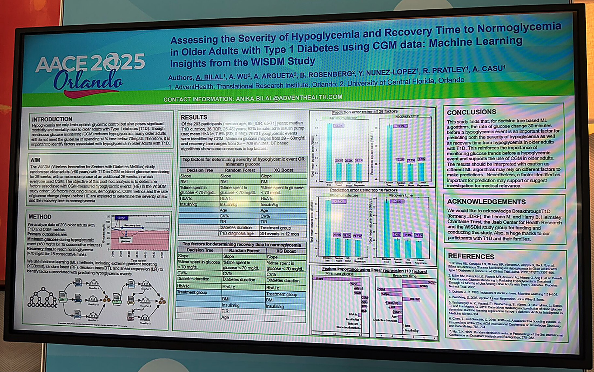

Click the poster to zoom in and read it
Published: conference co-authorFor a year, I worked as a research assistant in a UCF Computer Science lab partnered with AdventHealth, trying to predict when a person with Type 1 Diabetes is about to have a hypoglycemic event, and how severe and how long it will last. I built the data pipeline in Python with pandas and NumPy, then trained and compared linear regression, decision trees, random forest, and XGBoost models with scikit-learn to see which one actually predicted these events best.
Most of the real work was in the data. I wrote scripts to load, clean, and organize more than 10,000 patient records from Type 1 Diabetes patients, then pulled out the features that mattered: continuous glucose monitor and blood glucose meter readings, glucose variability, the rate of change in blood sugar, and insulin dosage patterns. Getting those features right made a bigger difference to the models than almost anything else I tried. After a lot of tuning, I got the error on our best model down to 6.02.
I met weekly with a research partner and a research professor to plan the next steps and review the code, and I worked directly with endocrinologists and diabetes specialists at AdventHealth to turn the raw numbers into charts and findings a doctor could actually use. That work became a poster, "Assessing the Severity of Hypoglycemia and Recovery Time to Normoglycemia in Older Adults with Type 1 Diabetes using CGM data: Machine Learning Insights from the WISDM Study," which I co-authored with Anika Bilal, Annie Wu, Angel Arguetta, Yury Nunez-Lopez, Richard Pratley, and Anna Casu, and which we presented at AACE 2025 in Orlando.
When I joined the lab, this was the paper I was handed to get up to speed, the first model built to predict hypoglycemic event severity and duration across the general Type 1 Diabetes population. Our AACE 2025 poster grew out of it, taking the same basic approach and applying it specifically to older adults using the WISDM study data. I wanted it here so the research reads as a straight line: this is where the project started, and the poster above is where I picked it up and took it further.